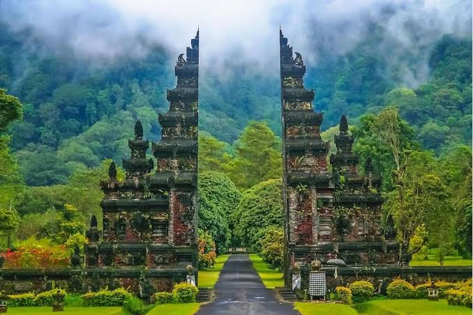

La isla de los dioses es un lugar muy turistico de Bali, Indonesia es una de los lugares muy bonitos
Escogi este lugar ya que es uno de los lugares que me gustaria visitar
Ademas de ser un lugar turistico muy lindo el cual me gustaria visitar, es uno pais que esta en mis metas

decidi hablar de este tema ya que como lo vengo diciemdo desde los otros parrafos es un lugar que me encatarioa conocer no solo por el como es y por lo que tiene que mostrar si no que, me gustaria conocer mucho sobre su cultura, la comida, y ademas me intriga el como adoran a los dioses es una de los cultaruas que creen en lo que no se ve y lo que no se siente al igual el como es que realmemte dice que pueden conectat con cosas que no se ve.
En Bali existe una tradicion de el Día del Silencio Absoluto
Que tambien existe o segun dicem que el cafe es el más caro del mundo
Elegi el tema ya que me gusta el Pais de Bali
ademas me gustaria conocer mas de su historia
Asi como tambien su cultura y el como son.